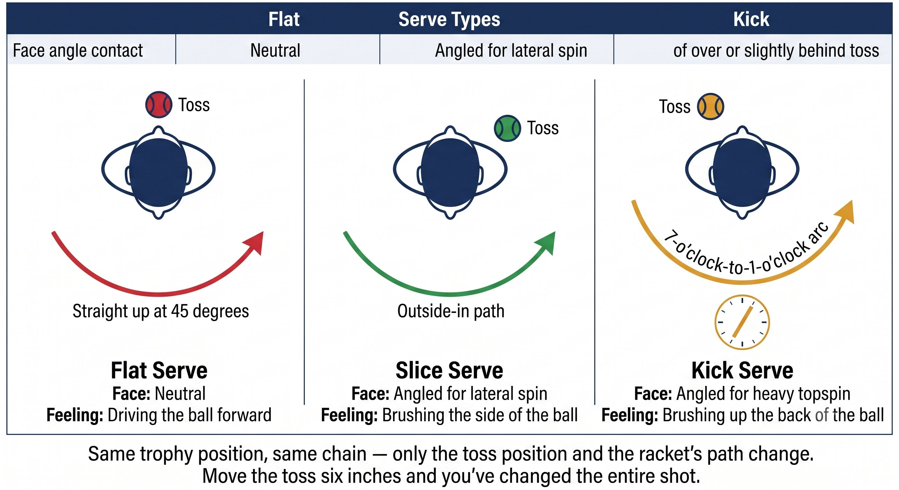
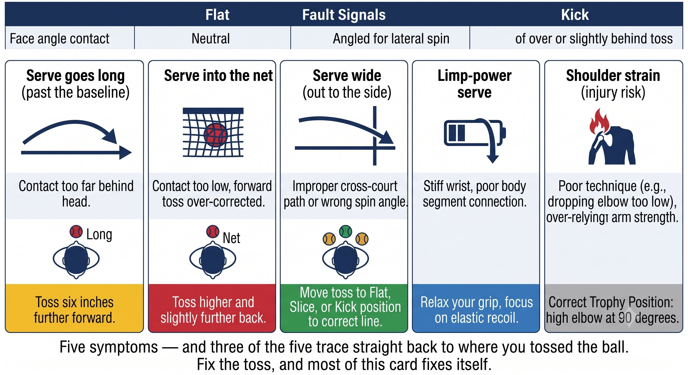

Chapter 22: Serve
(English version of Chapter 22 in the United Tennis Handbook)
CHAPTER 22

Figure 1
SERVE
Isolated Kinetic Chain
The only shot you control completely. No opponent's ball to read — just a pure kinetic chain running from the ground to your hand.
The serve isn't a groundstroke. There's no incoming ball — you create the energy entirely on your own. The kinetic chain has to be perfect, because there's no pace to borrow.
— Henry Pham
The Serve Is Different
The serve is the only shot with no incoming ball at all. Every bit of energy has to be generated from the ground up.
Here's the Kibler eight-stage model, mapped onto the serve:
Figure 22.1: Six stages, one unbroken chain. Trace the arrow from left to right and you're watching the entire serve happen in six frames — break any one link and the whole chain loses power.

Figure 2
The Serve Q-V-ROOT-8-45-Impulse Map
Figure 22.2: Same eight variables, one very different note: this is the one stroke in the whole book where Hua has nothing to absorb. You're building the entire wave yourself.

Figure 3
Grip and Toss: the Foundation
Platform vs. Pinpoint Stance
Figure 22.4: Platform keeps it simple — balance and consistency. Pinpoint trades complexity for power. Same kinetic chain, different weight-transfer engine.

Figure 4
The Rule
Choose the stance that lets you brake the hardest. Platform makes braking easier. Pinpoint gives you more drive but a harder brake to time.
Trophy Position: the Load
– The elbow sits at shoulder height or slightly above, at 90 degrees.
– The racket points up, edge up, never back — this loads the SSC correctly.
– The shoulders tilt, with the hitting shoulder higher than the toss shoulder.
– The hip rotates and the trunk coils, loading the spiral line.
– The toss arm extends upward, pointing at the ball, as a counter-balance.
Coach's Note
The trophy position isn't a pose. It's the SSC load. If you don't feel a stretch in the chest, lat, and shoulder at the trophy position, you're not loaded. No load means no SSC, which means no power.
Figure 22.3: The trophy position isn't a pose — it's the SSC load. Elbow at 90, shoulder externally rotated, hips coiled. If you don't feel the stretch in chest and lat, you're not loaded.

Figure 5
Acceleration: the One-Inch Pulse
– The racket drops behind the back from gravity plus trunk rotation — never from muscling it down.
– The front leg or hip brakes hard, the torso stops rotating, and the arm whips forward.
– Shoulder internal rotation, elbow extension, and pronation together make the whip.
– Contact: slightly in front, to the right, above the head. Pronation peaks exactly at contact.
– Feel: a one-inch pulse. Never a long swing — brake, then snap.
Serve Types: Same Chain, Different Face
Figure 22.5: Three serves, one toss zone. The toss doesn't move much — the path and face do. Flat goes through, slice goes across, kick goes up.
Fault Signals
Pre-Serve Routine (Q-V-ROOT Integration)
1. Feet to ground: platform or pinpoint set. Tripods active. Feel the screw.
2. Head to still: chin tucked, eyes on the toss contact zone.
3. Hands to 3/10: continental grip, loose wrist, the ball resting in the fingertips.
4. Breathe to center: two slow breaths. The vestibular system calms.
5. Toss to load: the toss triggers the coiling. Hips turn, the trunk tilts. Feel the stretch.
6. Trophy to brake to pulse: see the contact point, brake the hip, snap the pronation.
The Principle
The serve is the purest test of Q-V-ROOT-8-45-Impulse-Jin. There's no opponent's ball to react to — you have to generate everything yourself. If the serve breaks, the whole chain breaks.
The Serve Checklist
FEET SCREW. TOSS LOADS. TROPHY STRETCHES. BRAKE THE HIPS. PRONATE THE PULSE.
– Stance: platform or pinpoint, tripods active.
– Grip: continental, loose wrist, 3/10.
– Toss: inside the baseline, right of the head, peaking about 6 inches above the contact point.
– Trophy: elbow up, racket edge up, shoulders tilted — feel the stretch.
– Brake: the front hip or leg stops hard, the torso stops.
– Pulse: the pronation snaps at contact, one inch, never a long swing.
– Head: still, eyes on the contact zone, no peeking.
– Finish: the racket crosses the body, weight forward, balanced.
Where This Leads
This chapter integrates Q-V-ROOT-8-45-Impulse-Jin into the serve. Chapter 23 covers the return of serve. Chapter 24 covers the volley and overhead. Chapter 25 covers the slice, the drop shot, and the lob.